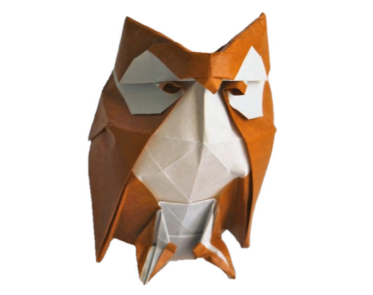
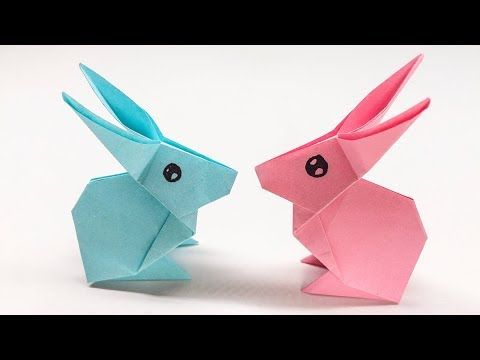

Panda
- Pandas eat consistently for 12-14 hours a day.
- Baby pandas are born pink and measure about 15cm.
- bamboo counts for 99 percent of their diet.
- An adult panda weight more than 45 kilos (100 pounds), and can be about 1.5 meters (5 feet) long!
- Giant pandas are good at climbing trees and can also swim.

Pigeon
- Pigeons are incredibly complex and intelligent animals. They are one of
only a small number of species to pass the ‘mirror test’ – a test of self recognition.
- Pigeons are renowned for their outstanding navigational abilities. They use a range of skills,
such as using the sun as a guide and an internal ‘magnetic compass’.
- Pigeons can fly at altitudes up to and beyond 6000 feet, and at an average speed of 77.6 mph.

cicada
- Cicadas are harmless and can’t bite or sting.
- Swarming cicadas are very loud.
- The loud whirring or buzzing sound you hear is an all-male cicada chorus.
- cicadas have red eyes, but they can also have white, gray, blue, or multi-colored eyes.
Crab
- There are over 4,500 species of crabs.
- Crabs are decapods or crustaceans with 10 legs
- Crabs communicate by flapping their pincers or drumming their claws.
- Crabs are invertebrates, which mean they don’t have a backbone.
- The pea crab (Pinnotheres pisum) is the smallest known species reaches from 6 to 13 millimeters.

Owl
- Many owls have asymmetrical ears. Their ears are located at different heights on their heads.
- An owl has 3 eyelids- one for blinking, one for sleeping and one for keeping its eyes clean.
- Owls have broad wings and very light bodies which makes them silent fliers.
- All species of Owls do not hoot. They make other sounds like screeching, whistling, growling, rattling, even barking and hissing.

Squirrel
- A squirrel’s front teeth never stop growing.
- A newborn squirrel is about an inch long.
- Squirrels are acrobatic, intelligent, and adaptable.
- Putting on some extra weight is one strategy squirrels use to stay warm during the cold winter months.
Penguin
- A group of penguins in the water is called a raft but on land they’re called a waddle!
- Penguins live in many locations and habitats.
- Penguin feet are adapted to walk long distances.
- According to some animal experts, the penguin is one of the most streamlined animals in the world.

Rabbit
- Rabbits are very social creatures that live in groups.
- A rabbit’s teeth never stop growing! Instead, they’re gradually worn down as the rabbit chews on grasses and vegetables,meaning they never get too long.
- rabbits can turn their ears by 180 degrees, keeping a careful listen out for predators.
Dinosaur
- Dinosaurs lived in the Mesozoic Era, however it is often known as “The Age of Dinosaurs”.
- here were more than 700 species of dinosaurs.
- Dinosaur fossils have been found on all seven continents
- In 1842, the English naturalist Sir Richard Owen coined the term Dinosauria, derived from the Greek deinos, meaning “fearfully great,” and sauros, meaning “lizard.”